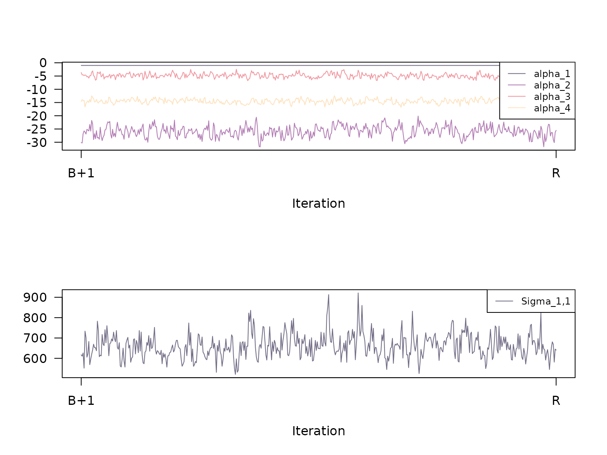

This vignette1 is a documentation of the estimation
procedure fit_model() in {RprobitB}.
Bayes estimation of the probit model
Bayes estimation of the probit model builds upon the work of McCulloch and Rossi (1994), Nobile (1998), Allenby and Rossi (1998), and Imai and Dyk (2005). A key ingredient is the concept of data augmentation, see Albert and Chib (1993): The idea is to treat the latent utilities \(U\) in the model equation \(U = X\beta + \epsilon\) as additional parameters. Then, conditional on \(U\), the probit model constitutes a standard Bayesian linear regression set-up. Its posterior distribution can be approximated by iteratively drawing and updating each model parameter conditional on the other parameters (the so-called Gibbs sampling approach).
A priori, we assume the following (conjugate) parameter distributions:
\((s_1,\dots,s_C)\sim D_C(\delta)\), where \(D_C(\delta)\) denotes the \(C\)-dimensional Dirichlet distribution with concentration parameter vector \(\delta = (\delta_1,\dots,\delta_C)\),
\(\alpha\sim \text{MVN}_{P_f}(\psi,\Psi)\), where \(\text{MVN}_{P_f}\) denotes the \(P_f\)-dimensional normal distribution with mean \(\psi\) and covariance \(\Psi\),
\(b_c \sim \text{MVN}_{P_r}(\xi,\Xi)\), independent for all \(c\),
\(\Omega_c \sim W^{-1}_{P_r}(\nu,\Theta)\), independent for all \(c\), where \(W^{-1}_{P_r}(\nu,\Theta)\) denotes the \(P_r\)-dimensional inverse Wishart distribution with \(\nu\) degrees of freedom and scale matrix \(\Theta\),
and \(\Sigma \sim W^{-1}_{J-1}(\kappa,\Lambda)\).
These prior distributions imply the following conditional posterior distributions:
The class weights are drawn from the Dirichlet distribution \[\begin{equation} (s_1,\dots,s_C)\mid \delta,z \sim D_C(\delta_1+m_1,\dots,\delta_C+m_C), \end{equation}\] where for \(c=1,\dots,C\), \(m_c=\#\{n:z_n=c\}\) denotes the current absolute class size.2
Independently for all \(n\), we update the allocation variables \((z_n)_n\) from their conditional distribution \[\begin{equation} \text{Prob}(z_n=c\mid s,\beta,b,\Omega )=\frac{s_c\phi_{P_r}(\beta_n\mid b_c,\Omega_c)}{\sum_c s_c\phi_{P_r}(\beta_n\mid b_c,\Omega_c)}. \end{equation}\]
The class means \((b_c)_c\) are updated independently for all \(c\) via \[\begin{equation} b_c\mid \Xi,\Omega,\xi,z,\beta \sim\text{MVN}_{P_r}\left( \mu_{b_c}, \Sigma_{b_c} \right), \end{equation}\] where \(\mu_{b_c}=(\Xi^{-1}+m_c\Omega_c^{-1})^{-1}(\Xi^{-1}\xi +m_c\Omega_c^{-1}\bar{b}_c)\), \(\Sigma_{b_c}=(\Xi^{-1}+m_c\Omega_c^{-1})^{-1}\), \(\bar{b}_c=m_c^{-1}\sum_{n:z_n=c} \beta_n\).
The class covariance matrices \((\Omega_c)_c\) are updated independently for all \(c\) via \[\begin{equation} \Omega_c \mid \nu,\Theta,z,\beta,b \sim W^{-1}_{P_r}(\mu_{\Omega_c},\Sigma_{\Omega_c}), \end{equation}\] where \(\mu_{\Omega_c}=\nu+m_c\) and \(\Sigma_{\Omega_c}=\Theta^{-1} + \sum_{n:z_n=c} (\beta_n-b_c)(\beta_n-b_c)'\).
Independently for all \(n\) and \(t\) and conditionally on the other components, the utility vectors \((U_{nt:})\) follow a \(J-1\)-dimensional truncated multivariate normal distribution, where the truncation points are determined by the choices \(y_{nt}\). To sample from a truncated multivariate normal distribution, we apply a sub-Gibbs sampler, following the approach of Geweke (1998): \[\begin{equation} U_{ntj} \mid U_{nt(-j)},y_{nt},\Sigma,W,\alpha,X,\beta \sim \mathcal{N}(\mu_{U_{ntj}},\Sigma_{U_{ntj}}) \cdot \begin{cases} 1(U_{ntj}>\max(U_{nt(-j)},0) ) & \text{if}~ y_{nt}=j\\ 1(U_{ntj}<\max(U_{nt(-j)},0) ) & \text{if}~ y_{nt}\neq j \end{cases}, \end{equation}\] where \(U_{nt(-j)}\) denotes the vector \((U_{nt:})\) without the element \(U_{ntj}\), \(\mathcal{N}\) denotes the univariate normal distribution, \(\Sigma_{U_{ntj}} = 1/(\Sigma^{-1})_{jj}\) and \[\begin{equation} \mu_{U_{ntj}} = W_{ntj}'\alpha + X_{ntj}'\beta_n - \Sigma_{U_{ntj}} (\Sigma^{-1})_{j(-j)} (U_{nt(-j)} - W_{nt(-j)}'\alpha - X_{nt(-j)}' \beta_n ), \end{equation}\] where \((\Sigma^{-1})_{jj}\) denotes the \((j,j)\)th element of \(\Sigma^{-1}\), \((\Sigma^{-1})_{j(-j)}\) the \(j\)th row without the \(j\)th entry, \(W_{nt(-j)}\) and \(X_{nt(-j)}\) the coefficient matrices \(W_{nt}\) and \(X_{nt}\), respectively, without the \(j\)th column.
Updating the fixed coefficient vector \(\alpha\) is achieved by applying the formula for Bayesian linear regression of the regressors \(W_{nt}\) on the regressands \((U_{nt:})-X_{nt}'\beta_n\), i.e. \[\begin{equation} \alpha \mid \Psi,\psi,W,\Sigma,U,X,\beta \sim \text{MVN}_{P_f}(\mu_\alpha,\Sigma_\alpha), \end{equation}\] where \(\mu_\alpha = \Sigma_\alpha (\Psi^{-1}\psi + \sum_{n=1,t=1}^{N,T} W_{nt} \Sigma^{-1} ((U_{nt:})-X_{nt}'\beta_n) )\) and \(\Sigma_\alpha = (\Psi^{-1} + \sum_{n=1,t=1}^{N,T} W_{nt}\Sigma^{-1} W_{nt}^{'} )^{-1}\).
Analogously to \(\alpha\), the random coefficients \((\beta_n)_n\) are updated independently via \[\begin{equation} \beta_n \mid \Omega,b,X,\Sigma,U,W,\alpha \sim \text{MVN}_{P_r}(\mu_{\beta_n},\Sigma_{\beta_n}), \end{equation}\] where \(\mu_{\beta_n} = \Sigma_{\beta_n} (\Omega_{z_n}^{-1}b_{z_n} + \sum_{t=1}^{T} X_{nt} \Sigma^{-1} (U_{nt:}-W_{nt}'\alpha) )\) and \(\Sigma_{\beta_n} = (\Omega_{z_n}^{-1} + \sum_{t=1}^{T} X_{nt}\Sigma^{-1} X_{nt}^{'} )^{-1}\) .
The error term covariance matrix \(\Sigma\) is updated by means of \[\begin{equation} \Sigma \mid \kappa,\Lambda,U,W,\alpha,X,\beta \sim W^{-1}_{J-1}(\kappa+NT,\Lambda+S), \\ \end{equation}\] where \(S = \sum_{n=1,t=1}^{N,T} \varepsilon_{nt} \varepsilon_{nt}'\) and \(\varepsilon_{nt} = (U_{nt:}) - W_{nt}'\alpha - X_{nt}'\beta_n\).
Parameter normalization
Samples obtained from the updating scheme described above lack identification (except for \(s\) and \(z\) draws), compare to the vignette on the model definition. Therefore, subsequent to the sampling, the following normalizations are required for the \(i\)th updates in each iterations \(i\):
\(\alpha^{(i)} \cdot \omega^{(i)}\),
\(b_c^{(i)} \cdot \omega^{(i)}\), \(c=1,\dots,C\),
\(U_{nt}^{(i)} \cdot \omega^{(i)}\), \(n = 1,\dots,N\), \(t = 1,\dots,T\),
\(\beta_n^{(i)} \cdot \omega^{(i)}\), \(n = 1,\dots,N\),
\(\Omega_c^{(i)} \cdot (\omega^{(i)})^2\), \(c=1,\dots,C\), and
\(\Sigma^{(i)} \cdot (\omega^{(i)})^2\),
where either \(\omega^{(i)} = \sqrt{\text{const} / (\Sigma^{(i)})_{jj}}\) with \((\Sigma^{(i)})_{jj}\) the \(j\)th diagonal element of \(\Sigma^{(i)}\), \(1\leq j \leq J-1\), or alternatively \(\omega^{(i)} = \text{const} / \alpha^{(i)}_p\) for some coordinate \(1\leq p \leq P_f\) of the \(i\)th draw for the coefficient vector \(\alpha\). Here, \(\text{const}\) is any positive constant (typically 1). The preferences will be flipped if \(\omega^{(i)} < 0\), which only is the case if \(\alpha^{(i)}_p < 0\).
Burn-in and thinning
The theory behind Gibbs sampling constitutes that the sequence of samples produced by the updating scheme is a Markov chain with stationary distribution equal to the desired joint posterior distribution. It takes a certain number of iterations for that stationary distribution to be approximated reasonably well. Therefore, it is common practice to discard the first \(B\) out of \(R\) samples (the so-called burn-in period). Furthermore, correlation between nearby samples should be expected. In order to obtain independent samples, we consider only every \(Q\)th sample when computing Gibbs sample statistics like expectation and standard deviation. The independence of the samples can be verified by computing the serial correlation and the convergence of the Gibbs sampler can be checked by considering trace plots, see below.
The fit_model() function
The Gibbs sampling scheme described above can be executed by applying the function
fit_model(data = data)where data must be an RprobitB_data object
(see the vignette about choice data). The function has the following
optional arguments:
scale: A character which determines the utility scale. It is of the form"<parameter> := <value>", where<parameter>is either the name of a fixed effect orSigma_<j>,<j>for the<j>th diagonal element ofSigma, and<value>is the value of the fixed parameter (i.e. \(\text{const}\) introduced above). Per defaultscale = "Sigma\_1,1 := 1", i.e. the first error-term variance is fixed to 1.R: The number of iterations of the Gibbs sampler. The default isR = 10000.B: The length of the burn-in period, i.e. a non-negative number of samples to be discarded. The default isB = R/2.Q: The thinning factor for the Gibbs samples, i.e. only everyQth sample is kept. The default isQ = 1.print_progress: A boolean, determining whether to print the Gibbs sampler progress.-
prior: A named list of parameters for the prior distributions (their default values are documented in thecheck_prior()function):eta: The mean vector of lengthP_fof the normal prior foralpha.Psi: The covariance matrix of dimensionP_fxP_fof the normal prior foralpha.delta: The concentration parameter of length 1 of the Dirichlet prior fors.xi: The mean vector of lengthP_rof the normal prior for eachb_c.D: The covariance matrix of dimensionP_rxP_rof the normal prior for eachb_c.nu: The degrees of freedom (a natural number greater thanP_r) of the Inverse Wishart prior for eachOmega_c.Theta: The scale matrix of dimensionP_rxP_rof the Inverse Wishart prior for eachOmega_c.kappa: The degrees of freedom (a natural number greater thanJ-1) of the Inverse Wishart prior forSigma.E: The scale matrix of dimensionJ-1xJ-1of the Inverse Wishart prior forSigma.
latent_classes: A list of parameters specifying the number and the updating scheme of latent classes, see the vignette on modeling heterogeneity fitting.
Example
In the
previous vignette on choice data, we introduced the Train data set
from the {mlogit} package (Croissant
2020) that contains 2922 choices between two fictional train
route alternatives. First, we transform the travel time
from minutes to hours and the travel price from guilders to
euros:
data("Train", package = "mlogit")
Train$price_A <- Train$price_A / 100 * 2.20371
Train$price_B <- Train$price_B / 100 * 2.20371
Train$time_A <- Train$time_A / 60
Train$time_B <- Train$time_B / 60The following lines fit a probit model that explains the chosen trip
alternatives (choice) by their price,
time, number of changes, and level of
comfort (the lower this value the higher the comfort). For
normalization, the first linear coefficient, the price, was
fixed to -1, which allows to interpret the other
coefficients as monetary values:
form <- choice ~ price + time + change + comfort | 0
data <- prepare_data(form = form, choice_data = Train)
model_train <- fit_model(
data = data,
scale = "price := -1"
)The estimated coefficients (using the mean of the Gibbs samples as a point estimate) can be printed via
coef(model_train)
#> Estimate (sd)
#> 1 price -1.00 (0.00)
#> 2 time -25.90 (2.09)
#> 3 change -4.82 (0.84)
#> 4 comfort -14.49 (0.86)and visualized via

The results indicate that the deciders value one hour travel time by about 25€, an additional change by 5€, and a more comfortable class by 14€.3
Checking the Gibbs samples
The Gibbs samples are saved in list form in the
RprobitB_fit object at the entry
"gibbs_samples", i.e.
str(model_train$gibbs_samples, max.level = 2, give.attr = FALSE)
#> List of 2
#> $ gibbs_samples_raw:List of 2
#> ..$ alpha: num [1:1000, 1:4] -0.000713 -0.022961 -0.031988 -0.036215 -0.03571 ...
#> ..$ Sigma: num [1:1000, 1] 1.05 1.1 1.03 1.02 1.01 ...
#> $ gibbs_samples_nbt:List of 2
#> ..$ alpha: num [1:500, 1:4] -1 -1 -1 -1 -1 -1 -1 -1 -1 -1 ...
#> ..$ Sigma: num [1:500, 1] 617 611 626 552 734 ...This object contains 2 elements:
gibbs_samples_rawis a list of the raw samples from the Gibbs sampler,and
gibbs_samples_nbtare the Gibbs samples used for parameter estimates, i.e. the normalized and thinned Gibbs samples after the burn-in.
Calling the summary function on the estimated
RprobitB_fit object yields additional information about the
Gibbs samples gibbs_samples_nbt. You can specify a list
FUN of functions that compute any point estimate of the
Gibbs samples4, for example
meanfor the arithmetic mean,stats::sdfor the standard deviation,R_hatfor the Gelman-Rubin statistic (Gelman and Rubin 1992) 5,or custom statistics like the absolute difference between the median and the mean.
summary(model_train,
FUN = c(
"mean" = mean,
"sd" = stats::sd,
"R^" = R_hat,
"custom_stat" = function(x) abs(mean(x) - median(x))
)
)
#> Probit model
#> Formula: choice ~ price + time + change + comfort | 0
#> R: 1000, B: 500, Q: 1
#> Level: Utility differences with respect to alternative 'B'.
#> Scale: Coefficient of effect 'price' (alpha_1) fixed to -1.
#>
#> Gibbs sample statistics
#> mean sd R^ custom_stat
#> alpha
#>
#> 1 -1.00 0.00 1.00 0.00
#> 2 -25.90 2.09 1.04 0.07
#> 3 -4.82 0.84 1.00 0.02
#> 4 -14.49 0.86 1.00 0.02
#>
#> Sigma
#>
#> 1,1 661.69 59.21 1.03 7.30Calling the plot method with the additional argument
type = "trace" plots the trace of the Gibbs samples
gibbs_samples_nbt:

Additionally, we can visualize the serial correlation of the Gibbs
samples via the argument type = "acf". The boxes in the
top-right corner state the total sample size TSS (here R -
B = 10000 - 5000 = 5000), the effective sample size ESS,
and the factor by which TSS is larger than ESS.
Here, the effective sample size is the value \(\text{TSS} / (1 + \sum_{k\geq 1} \rho_k)\),
where \(\rho_k\) is the auto
correlation between the chain offset by \(k\) positions. The auto correlations are
estimated via the stats::acf() function.
Model transformation after estimation
The transform method can be used to transform an
RprobitB_fit object in three ways:
- change the length
Bof the burn-in period, for example
model_train <- transform(model_train, B = 1)- change the thinning factor
Qof the Gibbs samples, for example
model_train <- transform(model_train, Q = 100)- or change the model normalization
scale, for example
model_train <- transform(model_train, scale = "Sigma_1 := 1")